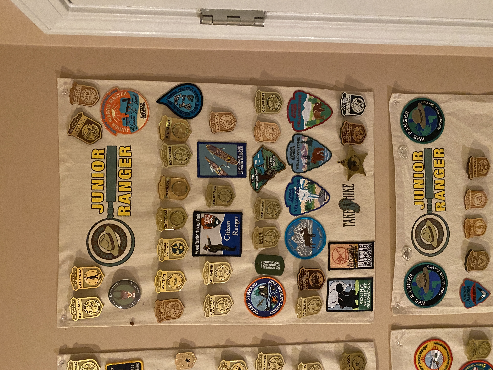
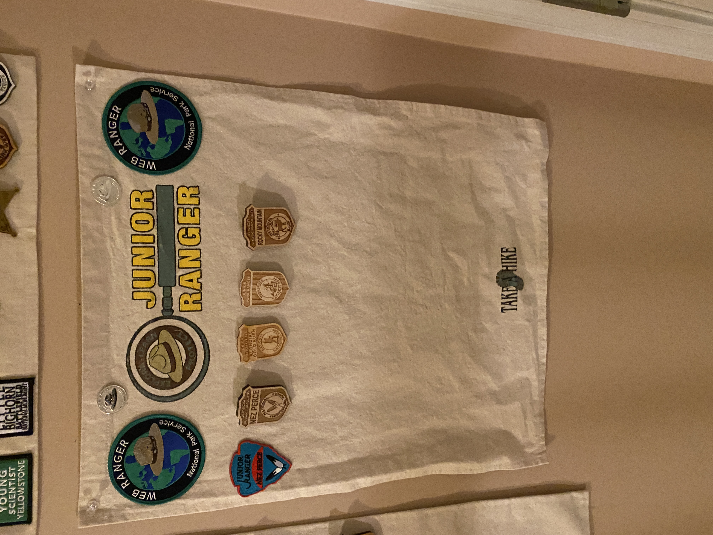

Getting Access to the NPS Data
Happy National Park Week! Right before the WNBA Season starts, I wanted to do a very short and fun project with National Park Data that I found! The article goes through me explaining my favorite parts about the National Park Service (NPS) as well as digging into the National Park API that I recently discovered. This API does require a key which can be freely requested from this website:
To start the code, I initialized two variables: base_url that is the base url used for all API requests and api_key (not shown) which is a string of the API Key I recieved from NPS.
# Enter API KEY in a variable called api_key
# Base URL
base_url <- 'https://developer.nps.gov/api/v1'
Passport Cancellations
One of my favorite things to do at National Parks is get my Passport Stamped. I have one of the Collector’s Edition Passports (Available Here), though I got mine when they originally came out and it has a harder cover than the one they are selling now. The majority of National Park Sites have a spot to get your Passport stamped, but some have multiple spots and cancellations! For example, a site may be part of a larger collection of sites such as the Underground Railroad. The next code chunk shows how many cancellations (according to the API) that one could get at a given National Park. I would presume this is full time stamps and excludes special event stamps such as the Total Solar Eclipse Cancellation from April 2024.
# Get Passport Stamp Locations
passport_json <- httr2::request(paste0(base_url, '/passportstamplocations')) %>%
# Add API Key and Limit to the url in the query
httr2::req_url_query('api_key' = api_key,
'limit' = 2000) %>%
# Perform the request
req_perform() %>%
# Get the JSON
resp_body_json()
# Get the data part of the json then convert to JSON
# Was previously stored as a string
raw_stamps_data <- passport_json[['data']] %>% toJSON()
# Convert to Data frame
stamps_df <- raw_stamps_data %>%
# Convert from JSON to nested lists
fromJSON() %>%
# Convert to a true data frame
as.data.frame() %>%
# Unnest columns
unnest(cols = c(id, label, parks, type)) %>%
# Unnest the columns that were in parks
unnest(cols = c(states, parkCode, designation, fullName, url, name))
# Count the number of stamps per park
stamp_count_df <- stamps_df %>%
#' Every Park has a unique code of around 4 characters that uniquely identifies each park
#' We want to count the number of stamps per park so we group by parkCode and then
#' count the number of rows to tell us approxiately how many stamps there are!
group_by(parkCode) %>%
summarise(numberOfStamps = n()) %>%
# Ungoup
ungroup()
Junior Ranger Programs
My other favorite thing to do at National Parks is the Junior Ranger Program. Between myself and the rest of my family, we have around 200 Junior Ranger badges! The Junior Ranger Program allows kids, called Junior Rangers, to complete the activity booklet as well to earn their badge. Of course, they also allow “Not So Junior Rangers” to complete the booklet and receive the badge as well. The NPS API also has records of which sites have Junior Ranger programs. I wanted to pull the list of these sites and merge them together with the Passport Cancellations from earlier!


# Get Parks Stamp Locations
parks_json <- httr2::request(paste0(base_url, '/parks')) %>%
# Add API Key and Limit to the url in the query
httr2::req_url_query('api_key' = api_key,
'limit' = 2000) %>%
# Perform the request
req_perform() %>%
# Get the JSON
resp_body_json()
# Get the data part of the json then convert to JSON
# Was previously stored as a string
raw_parks_data <- parks_json[['data']] %>% toJSON()
# Convert to Data frame
parks_df <- raw_parks_data %>%
# Convert from JSON to nested lists
fromJSON() %>%
# Convert to a true data frame
as.data.frame()
# Find the Junior Ranger Programs!
junior_ranger_df <- parks_df %>%
# Unnest activities column to find Junior Ranger Programs
unnest(activities, names_sep = '') %>%
# Filter to only parks with a Junior Ranger program
filter(activitiesname == 'Junior Ranger Program') %>%
# Unnest the parkCode column for joining with the stamp_count_df
unnest(parkCode)
Combining Data Frames
Now that I have a data frame for each of the Passport Stamps and the Junior Rangers, we need a way to combine them. Luckily, each National Park Site has a unique Park Code that is used to identify each park.
# Combine the datasets and replace NAs for number of stamps with a 0
full_nps_data <- left_join(junior_ranger_df,
stamp_count_df,
by = join_by(parkCode)) %>%
# If the Stamp count is missing, replace it with a 0
replace_na(replace = list(numberOfStamps = 0))
# Select Only Data Desired
filtered_nps_data <- full_nps_data %>%
select(fullName, parkCode, states, description, latitude, longitude, designation,
numberOfStamps) %>%
# convert coordinates to numeric
mutate(latitude = as.numeric(latitude),
longitude = as.numeric(longitude)
) %>%
# Unnesting even more columns so that the data frame is only made of vector columns
unnest(c(fullName, parkCode, states, description, designation))
Map
I’ve always wanted to create a map with National Park Information so here is that map! I used https://rpubs.com/RagtagCreature/898538 to get started!
National Parks with Junior Ranger Programs
# Specify Color Palette for coloring the circles
pal = colorNumeric(c('#6F4930', '#56903A'),
domain = filtered_nps_data$numberOfStamps)
# Create the map
leaflet(filtered_nps_data) %>%
addTiles() %>%
# Add the circle markers
addCircleMarkers(~longitude,
~latitude,
# When Hovered over, have a little pop up
popup = paste(filtered_nps_data$fullName,
"<br>",
"States:",
filtered_nps_data$states,
"<br>",
"Designation:",
filtered_nps_data$designation,
"<br>",
"Number of Passport Cancellations: ",
filtered_nps_data$numberOfStamps,
"<br>",
"Description:",
filtered_nps_data$description),
# Size and weight of markers
weight=5,
radius = 5,
# Color of Markers
col = ~pal(numberOfStamps), opacity = 0.9
) %>%
# Add Legend
addLegend(pal = pal, values = ~numberOfStamps)
Until Next Time!
Here are a few of my opinions about the National Park Sites I have visited so far (links by clicking on the park name):
Favorite National Park: Acadia (ME)
Favorite National Historic Site: Thaddeus Kosciuszko (PA)
Coolest Cancellation Stamps; Tie - Wright Brothers (NC and OH) and Manhattan Project (WA, NM, and TN) (I haven’t gotten all parts yet, but can’t wait to do so)
Favorite Junior Ranger Program: Eisenhower Junior Secret Service (PA)
Hardest Junior Ranger: Yellowstone Young Scientist (WY)
Honorary Mention Favorite Junior Ranger: Cuyahoga Valley (OH), Andersonville (GA), Fort Langley (BC, Canada)
Favorite Park Pictures (from recent memory)
Billy at Rock Creek Nature Center and Planetarium (DC) in the little kids room filling out a Junior Ranger Booklet. Fun Fact: Rock Creek is the NPS Site with a Planetarium

Billy and Euler after completing Euler’s BARK Ranger program on a wet day at Little River Canyon (AL). Euler passed away that next school year, but went out with a bang earning 2 BARK Ranger tags in Summer 2022. To learn more about the BARK Ranger Program, visit
https://www.nps.gov/subjects/pets/be-a-bark-ranger.htm
Happy Trails!